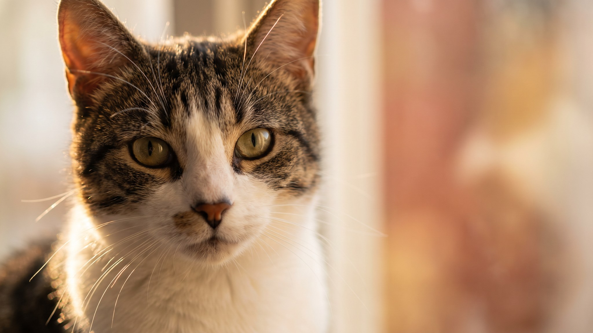

Хайленд-страйт лежит на подоконнике, а через минуту уже следит за каждым вашим шагом. За спокойной внешностью скрываются регулярное вычёсывание и потребность в общении. Проверьте пять бытовых вопросов, прежде чем выбирать котёнка этой породы.
🐾 Спросите AI-ветеринара о вашей кошки
AnimaLife отвечает на вопросы о кошках и собаках круглосуточно, ведёт дневник здоровья и напоминает о прививках. Бесплатно, без записи.
Открыть AnimaLife → Открыть в MAX →
У вас iPhone? AnimaLife есть в App Store
Ответы важнее фотографии конкретного малыша. Порода задаёт бытовые задачи, но не гарантирует характер. Один хайленд-страйт охотно сидит на руках, другой предпочитает быть рядом на диване. Заранее решите, устроит ли вас оба варианта.
Начните с расписания. Посчитайте время по рабочим дням, включая дорогу на работу и вечерние дела. Уход займёт около получаса в неделю без учёта игр и уборки шерсти с текстиля. Если расписание меняется, нужен человек, который сможет сохранить кошке привычный порядок.
Для вычёсывания нужны расчёска с редкими зубьями и щётка с мягкой щетиной. Сначала разберите пальцами шерсть за ушами, подмышками и на штанишках, затем пройдитесь расчёской по росту волос. Один спокойный сеанс обычно занимает 10 минут. Если кошка уходит, закончите и повторите позже.
Раз в неделю проверяйте места за ушами и на животе: там колтуны появляются раньше. Не тяните спутанную прядь и не подрезайте её ножницами рядом с кожей. Приучайте котёнка к расчёске короткими подходами по 2 минуты, с паузой и лакомством после процедуры.
Выделите для расчёсок постоянное место, чтобы не искать инструменты перед процедурой. Рядом нужны лакомство и небольшая салфетка для очистки щётки. Если дома несколько людей, закрепите дни вычёсывания за конкретными членами семьи.
Хайленд-страйтов часто описывают как контактных кошек, которые любят находиться рядом с человеком. В быту это означает совместные игры с удочкой, знакомство с новыми предметами и спокойное присутствие хозяина. Оставьте 2 игровых подхода по 10 минут в расписании семьи, чтобы забота не зависела от свободной минуты одного человека.
Дайте кошке выбор: подойти, наблюдать с полки или уйти в другую комнату. Прямые уши не говорят о скоттиш-фолде: хайленд-страйт относится к длинношёрстной ветви шотландских кошек со стоячими ушами. У скоттиш-фолда уши сложены вперёд, поэтому названия пород нельзя подменять в объявлении.
Попросите посмотреть условия содержания котят и поведение мамы, документы на помёт и сведения о возрасте малыша. Обратите внимание, как котёнок играет, ест и реагирует на привычные домашние звуки. Задайте вопросы о текущем уходе за шерстью и привычном корме.
Запишите ответы сразу после визита и сравните их со своим недельным расписанием. Попросите показать, как заводчик расчёсывает котёнка и к каким процедурам тот уже привык. Это даст вам конкретный план на первые дни дома.
Если продавец торопит, не показывает жильё котят или называет прямоухого малыша фолдом, сделайте паузу. Домашний визит помогает оценить быт животного лучше подобранных фотографий.
Материал носит информационный характер и не заменяет очную консультацию ветеринара.
🐾 Всё о вашем питомце — в одном приложении
AI-ветеринар, дневник здоровья, напоминания об уходе и прививках. Бесплатно, в Telegram и MAX.
Установить AnimaLife → Открыть в MAX →
У вас iPhone? AnimaLife есть в App Store
🐾 Понравился разбор?
Подпишитесь на канал — каждый день разбираем по одному тревожному симптому у кошек и собак: что в пределах нормы, а когда пора к врачу. Подпишитесь, чтобы не пропустить разбор, который может спасти здоровье вашего питомца.